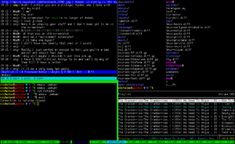

tmux — это менеджер терминалов, к которому удобно подключаться и отключаться, не теряя при этом процессы и историю. Как screen, только лучше (в первую очередь потому, что использует модель клиент—сервер).

Вашему вниманию предлагается минималистическая шпаргалка, позволяющая быстро начать использовать tmux, а уж тонкую настройку, продвинутые команды и бесконечные хот-кеи желающие найдут, набрав man tmux.
Очень хороший способ запустить tmux:
tmux attach || tmux new
— делая так, вы сперва пытаетесь подключиться к уже существующему серверу tmux, если он существует; если такого ещё нет — создаёте новый.
После этого вы попадаете в полноценную консоль.
Ctrl+b d — отключиться. (Точно так же вы отключитесь, если прервётся соединение. Как подключиться обратно и продолжить работу — см. выше.)
В одной сессии может быть сколько угодно окошек:
В одном окошке может быть много панелей:
Недостаток — непривычным становится скроллинг: